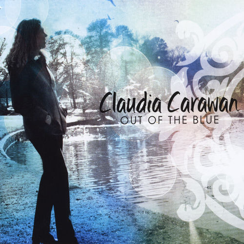

Claudia Carawan
Claudia Carawan is an American singer-songwriter and pianist. Although she has been creating and performing music for more than 20 years, it took until 2003 before she released her debut album, Out of the Blue. It derives its sound from several styles including soul, R&B, reggae and jazz. Carawan is a cousin of the folk musician Guy Carawan.
Complete Discography & Tracklists (1)